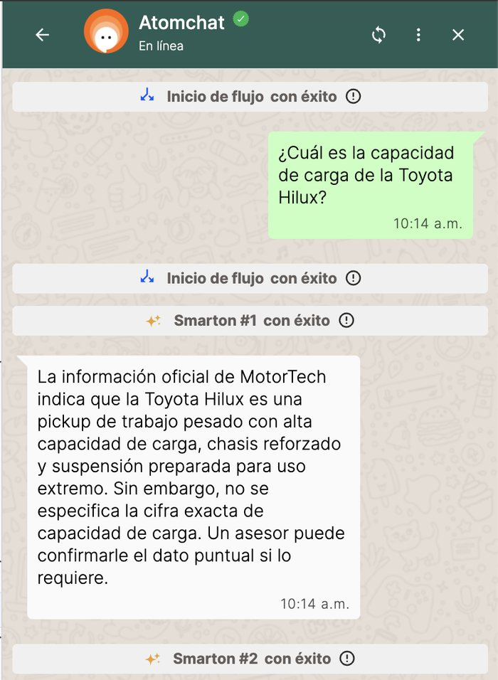
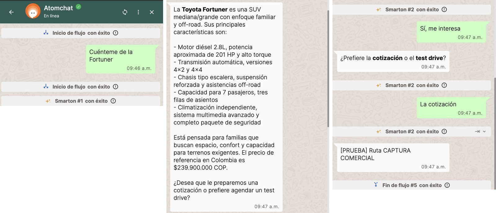
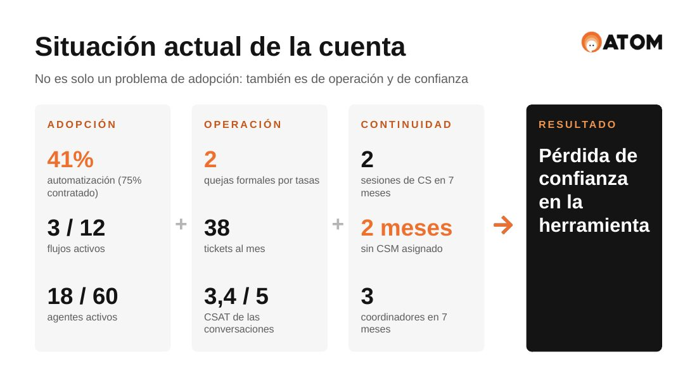
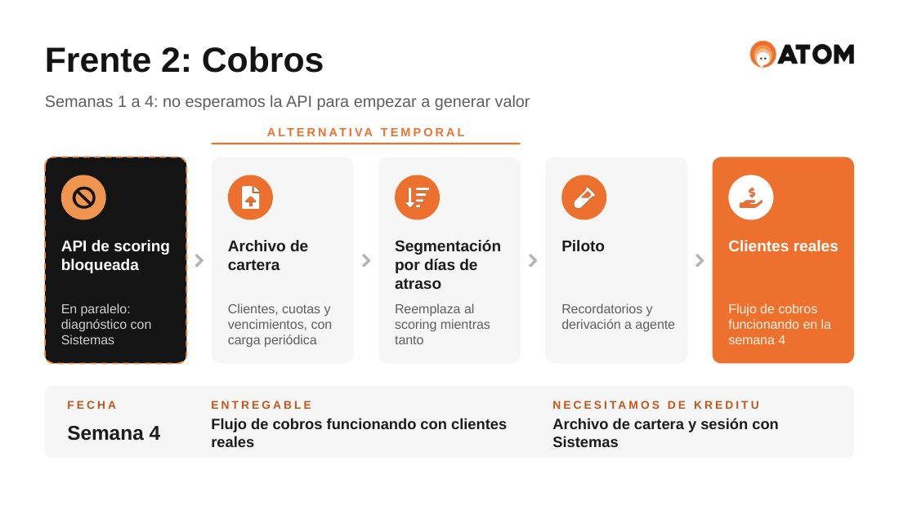

Dos casos completos. En el primero construí, probé e integré un bot de WhatsApp con un CRM y con Google Sheets. En el segundo armé el plan para recuperar una cuenta SaaS en riesgo, a 40 días de su renovación. Los dos fueron los desafíos técnicos de un proceso de selección para Customer Success Manager en ATOM, una plataforma de comercio conversacional por WhatsApp.
Hace más de tres años que trabajo del lado del cliente: primero en atención al cliente de una fintech y después implementando CRM y automatizaciones para más de ocho cuentas B2B en paralelo. En los dos casos el trabajo termina en lo mismo que mide un CSM: que el cliente use la herramienta y vea el resultado.
MotorTech es un concesionario oficial Toyota en Colombia. El desafío: construir en ATOM Flow Builder un bot que identifique si el cliente quiere comprar o necesita el taller, responda consultas de ventas solo con la información oficial, registre los leads de cotización y test drive en un CRM mediante su API, y agende las citas de taller en Google Sheets.
Cuatro Smartons (agentes de IA de ATOM), cuatro peticiones HTTP y tres condicionales. Cada rama tiene su mensaje de error para que la conversación nunca quede sin respuesta.
ATOM evalúa las intenciones de salida antes de que el Smarton responda. Por eso definí ahí qué cuenta como pedido de cotización y qué como falla del vehículo, con ejemplos de lo que aplica y de lo que no.
La API del CRM respondía 200 incluso cuando fallaba, con el error dentro del cuerpo. Guardé el campo status en variables y agregué condicionales que deciden según ese valor.
Ajusté el prompt de ventas en cuatro iteraciones. Después de cada una volví a correr el Test Bed completo para confirmar que lo corregido no rompiera otra respuesta.
Si la información oficial describe un dato sin cifra, como la capacidad de carga de la Hilux, el bot dice lo que sí sabe y aclara que la cifra no está. No inventa ni responde "no tengo información".


Kreditu es una fintech con el plan Business de ATOM, de USD 2.800 por mes. Llego como nuevo CSM, con la renovación a 40 días, y tengo que presentar mi lectura de la cuenta y una propuesta en la primera conversación con Valentina Ríos, Head of Digital Channels.
No propuse reactivar los doce flujos. La primera causa explica buena parte del resto, así que concentré los 40 días en lo que más afecta el valor y la confianza.
Va primero porque ya generó dos quejas formales.
Es el principal caso de uso de Kreditu y no voy a esperar a que se destrabe la API para generar valor.
El conocimiento tiene que quedar en la operación, no en una persona.
El éxito no se mide solo por el porcentaje de automatización.
| Dimensión | Indicador | Hoy | Meta a 40 días |
|---|---|---|---|
| ADOPCIÓN | Automatización | 41% | 55% (75% a 6 meses) |
| ADOPCIÓN | Flujo de cobros | No funciona | Con clientes reales |
| OPERACIÓN | Errores de tasas | 2 quejas formales | 0 durante 30 días |
| OPERACIÓN | Tickets de soporte | 38 por mes | Menos de 20 |
| EXPERIENCIA | CSAT de las conversaciones | 3,4 / 5 | 4,0 / 5 |


Tomo la cuenta como propia y coordino a quien haga falta: equipo técnico, soporte, dirección y el equipo del cliente.
Primero lo que genera riesgo, después lo que genera valor. Tres frentes bien hechos en lugar de doce a medias.
Si una dependencia técnica está trabada, busco otro camino hacia el valor mientras se destraba.
Metas con línea base, pruebas repetibles y documentación para que el conocimiento no se vaya con las personas.
Busco roles de Customer Success en empresas SaaS B2B, en remoto. Puedo recorrer cualquiera de estos casos en pantalla, con la herramienta abierta.
Córdoba, Argentina. Los dos casos son desafíos técnicos de un proceso de selección; MotorTech y Kreditu son empresas del enunciado. El flujo exportado está publicado sin tokens, claves ni direcciones privadas.